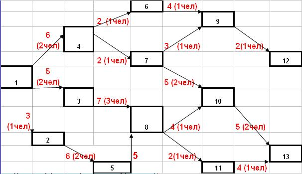

Вопросы для самопроверки
- Что такое критический путь?
- Что такое критические работы?
- Для чего используется диаграмма Ганта.
- Что такое буфер или резерв времени?
- Что такое критический путь?
- Что такое критические работы?
- Для чего используется диаграмма Гантта?
- Что такое буфер или резерв времени?
- Каково основное назначение WBS.
- Что такое WBS?
- Содержание пакета работ.
- Нижний уровень WBS.
- Какой процесс не относится к управлению временем?
- Какая зависимость свидетельствует о параллелизме?
- Что представляет собой нижний уровень структуры пооперационного перечня работ для сетевой диаграммы календаря?
Решить задачу.
Дано:

Рисунок 9.24 - Сетевой граф
Определить:
1. Трудоемкость работ.
2. Длительность всех вех.
3. Минимальное количество трудовых ресурсов
4. Длительность и работы критического пути
5. Составить график распределения трудовых ресурсов.
6. Сделать вывод об эффективности.